Centro de gravedad del arco de circunferencia
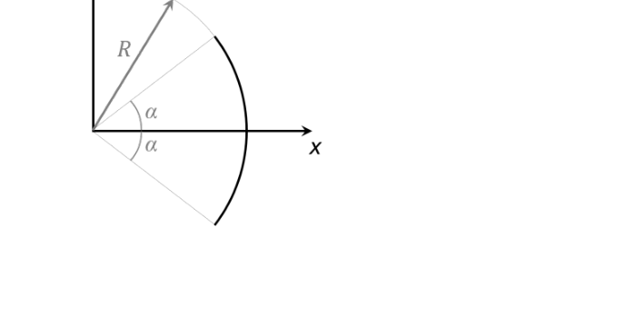
| Variable | Valor |
|---|---|
| Figura | Arco de circunferencia (elemento curvilíneo) |
| Radio | \(R\) |
| Semiángulo | \(\alpha\) (arco simétrico de \(-\alpha\) a \(+\alpha\)) |
| Incógnita | posición del CG respecto al vértice \(O\) |
El centro de gravedad de un elemento curvilíneo se obtiene ponderando la posición de cada punto por su longitud diferencial:
\[ x_G = \frac{\displaystyle\int x\,dL}{\displaystyle\int dL}, \qquad y_G = \frac{\displaystyle\int y\,dL}{\displaystyle\int dL} \]Para un arco circular de radio \(R\), el elemento diferencial de longitud en función del ángulo \(\theta\) es:
\[ dL = R\,d\theta \]Las coordenadas de un punto del arco son \(x = R\cos\theta\), \(y = R\sin\theta\).
El arco recorre desde \(\theta = -\alpha\) hasta \(\theta = +\alpha\):
\[ L = \int_{-\alpha}^{+\alpha} R\,d\theta = R\,[\theta]_{-\alpha}^{+\alpha} = R\cdot(+\alpha - (-\alpha)) = 2R\alpha \]El arco es simétrico respecto al eje \(x\). Para cada punto a ángulo \(+\theta\) con \(y = R\sin\theta > 0\), existe uno simétrico a \(-\theta\) con \(y = -R\sin\theta\). Las contribuciones se cancelan:
\[ y_G = \frac{\int_{-\alpha}^{+\alpha} R\sin\theta\cdot R\,d\theta}{2R\alpha} = \frac{R^2\,[-\cos\theta]_{-\alpha}^{+\alpha}}{2R\alpha} = \frac{R^2(-\cos\alpha + \cos\alpha)}{2R\alpha} = 0 \] \[ \boxed{y_G = 0} \]Calculamos \(\displaystyle\int_{-\alpha}^{+\alpha} x\,dL\):
\[ \int_{-\alpha}^{+\alpha} R\cos\theta \cdot R\,d\theta = R^2\,[\sin\theta]_{-\alpha}^{+\alpha} = R^2\,\bigl(\sin\alpha - \sin(-\alpha)\bigr) = R^2 \cdot 2\sin\alpha \]Verificación: para \(\alpha = \tfrac{\pi}{2}\) (semicircunferencia) → \(x_G = \tfrac{R \cdot 1}{\pi/2} = \tfrac{2R}{\pi} \approx 0{,}637R\) ✓
Centro de gravedad del triángulo
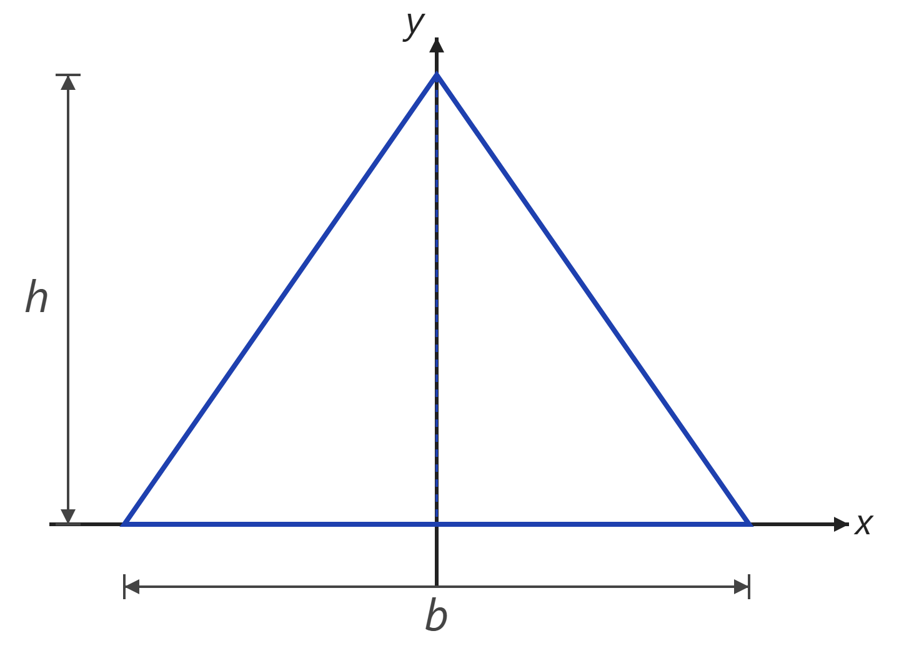
| Variable | Valor |
|---|---|
| Figura | Triángulo isósceles plano |
| Base | \(b\) (sobre el eje \(x\)) |
| Altura | \(h\) (vértice en el eje \(y\)) |
| Incógnita | posición del CG |
El centro de gravedad de una superficie plana se obtiene como:
\[ x_G = \frac{\displaystyle\int x\,dA}{A}, \qquad y_G = \frac{\displaystyle\int y\,dA}{A} \]La estrategia es integrar por franjas horizontales a altura \(y\). El ancho de cada franja varía linealmente con \(y\) por semejanza de triángulos.
Por semejanza de triángulos, a altura \(y\) la anchura restante es proporcional a la altura que queda \((h - y)\):
\[ \text{ancho}(y) = b\cdot\frac{h - y}{h} = b\!\left(1 - \frac{y}{h}\right) \]El elemento diferencial de área es:
\[ dA = b\!\left(1 - \frac{y}{h}\right)dy \]El triángulo es simétrico respecto al eje \(y\): para cada punto a \(+x\) existe uno a \(-x\) con el mismo área diferencial. Por tanto:
\[ x_G = 0 \]El momento estático \(Q_x = \int y\,dA\) es el numerador de \(y_G\):
\[ Q_x = \int_0^h y\,dA = \int_0^h y\cdot b\!\left(1 - \frac{y}{h}\right)dy = b\int_0^h\!\left(y - \frac{y^2}{h}\right)dy = b\!\left[\frac{y^2}{2} - \frac{y^3}{3h}\right]_0^h \] \[ = b\!\left(\frac{h^2}{2} - \frac{h^2}{3}\right) = b\,h^2\!\left(\frac{1}{2} - \frac{1}{3}\right) = b\,h^2\cdot\frac{1}{6} = \frac{bh^2}{6} \]El centro de gravedad de cualquier triángulo se sitúa a \(\tfrac{1}{3}\) de la base, independientemente de la forma (resultado general válido para triángulos no isósceles también).
Centro de gravedad del cono recto
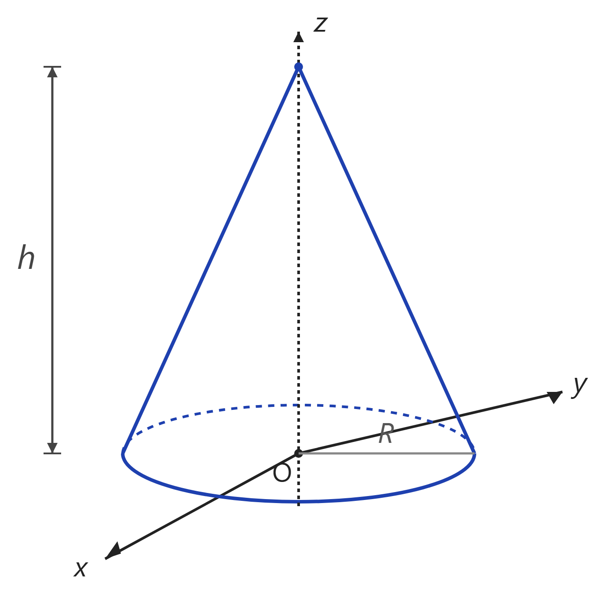
| Variable | Valor |
|---|---|
| Figura | Cono recto sólido |
| Radio de la base | \(R\) |
| Altura | \(h\) |
| Orientación | base en \(z=0\), vértice en \(z=h\) |
| Incógnita | posición del CG |
El centro de gravedad de un sólido homogéneo se calcula como:
\[ z_G = \frac{\displaystyle\int z\,dV}{V} \]Para un sólido de revolución con simetría respecto al eje \(z\), integramos por discos circulares horizontales de espesor \(dz\):
\[ dV = \pi\,r(z)^2\,dz \]donde \(r(z)\) es el radio del disco a altura \(z\).
El radio varía linealmente desde \(R\) en \(z=0\) hasta \(0\) en \(z=h\). Por semejanza de triángulos:
\[ r(z) = R\cdot\frac{h - z}{h} = R\!\left(1 - \frac{z}{h}\right) \]Elemento diferencial de volumen:
\[ dV = \pi\,r(z)^2\,dz = \pi R^2\!\left(1-\frac{z}{h}\right)^{\!2}dz \]Cambio de variable \(u = 1 - z/h\), \(dz = -h\,du\):
\[ V = \pi R^2 h\int_0^1 u^2\,du = \pi R^2 h\cdot\frac{1}{3} = \frac{\pi R^2 h}{3} \checkmark \]El cono es simétrico respecto al eje \(z\): \(x_G = y_G = 0\). Solo necesitamos calcular \(z_G\).
El CG se sitúa a \(\tfrac{1}{4}\) de la base. Análogamente, el triángulo (2D) tiene su CG a \(\tfrac{h}{3}\) — en 3D el cono "pesa más" cerca de la base, desplazando el CG más abajo.
Centro de gravedad de la semiesfera
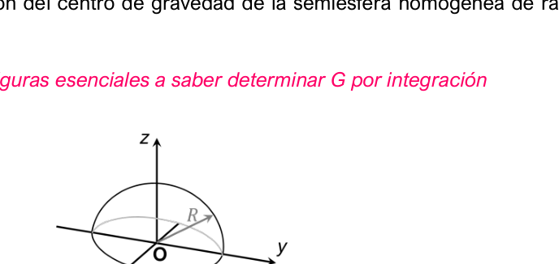
| Variable | Valor |
|---|---|
| Figura | Semiesfera homogénea sólida |
| Radio | \(R\) |
| Orientación | cara plana en \(z=0\), superficie curva hacia \(z>0\) |
| Incógnita | posición del CG |
Igual que en el cono, integramos por discos circulares horizontales de espesor \(dz\):
\[ dV = \pi\,r(z)^2\,dz \]En este caso el radio del disco a altura \(z\) se obtiene de la ecuación de la esfera \(x^2+y^2+z^2 = R^2\):
\[ r(z)^2 = R^2 - z^2 \]A altura \(z\), el radio del disco es \(r(z) = \sqrt{R^2 - z^2}\):
\[ dV = \pi\,r(z)^2\,dz = \pi(R^2 - z^2)\,dz \]La semiesfera es simétrica respecto al eje \(z\): \(x_G = y_G = 0\).
Progresión lógica: triángulo \(\tfrac{h}{3}\) → cono \(\tfrac{h}{4}\) → semiesfera \(\tfrac{3R}{8} \approx 0{,}375R\). La semiesfera es más "esférica" cerca de la cima, así que su CG sube respecto al cono.
Centro de gravedad de figura compuesta en L
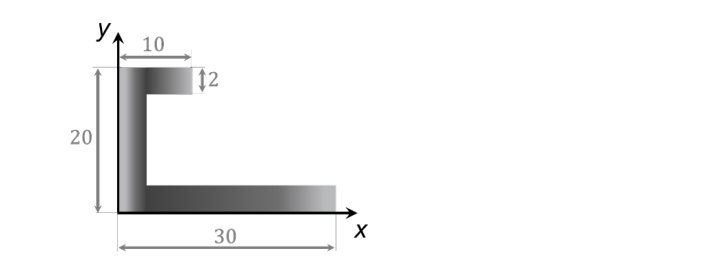
| Variable | Valor |
|---|---|
| Figura | Perfil en C / escuadra (medidas en cm) |
| Base total | \(30\ \text{cm}\) |
| Altura total | \(20\ \text{cm}\) |
| Ala superior | \(10 \times 2\ \text{cm}\) |
| Alma vertical | \(2\ \text{cm}\) de espesor |
| Incógnita | posición del CG respecto al sistema de referencia dado |
Para figuras compuestas se aplica la aditividad de los momentos estáticos:
\[ C_G = \frac{\sum A_i \cdot c_i}{\sum A_i} \]Se descompone la figura en subfiguras sencillas (rectángulos), cuyo centroide está siempre en su centro geométrico. Se suman áreas y momentos, y se divide.
Se divide la figura en tres rectángulos no solapados, asumiendo espesor constante de 2 cm:
- \(R_1\) (ala superior): rectángulo horizontal de 10×2 cm en la parte alta
- \(R_2\) (alma vertical): rectángulo vertical de 2×16 cm (altura total 20 menos las dos alas de 2 cm)
- \(R_3\) (base inferior): rectángulo horizontal de 30×2 cm en la base
El centroide de un rectángulo está en su centro geométrico:
\[ A_1 = 10 \cdot 2 = 20\ \text{cm}^2 \qquad x_1 = \tfrac{10}{2} = 5\ \text{cm} \qquad y_1 = 20 - 1 = 19\ \text{cm} \] \[ A_2 = 2 \cdot 16 = 32\ \text{cm}^2 \qquad x_2 = \tfrac{2}{2} = 1\ \text{cm} \qquad y_2 = 2 + \tfrac{16}{2} = 10\ \text{cm} \] \[ A_3 = 30 \cdot 2 = 60\ \text{cm}^2 \qquad x_3 = \tfrac{30}{2} = 15\ \text{cm} \qquad y_3 = \tfrac{2}{2} = 1\ \text{cm} \] \[ \sum A_i = 20 + 32 + 60 = 112\ \text{cm}^2 \]Centro de gravedad y volumen de revolución de \(Y = K \cdot x^n\)
- Posición del centro de gravedad respecto a los ejes \(x\) e \(y\).
- Volumen del cuerpo que la superficie genera al girar respecto al eje \(x\).
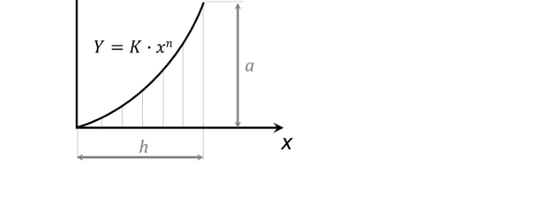
| Variable | Valor |
|---|---|
| Curva | \(Y = K \cdot x^n\), con \(n = 3\) |
| Incógnitas | posición del CG; volumen al girar respecto al eje \(x\) |
Se trabaja con tiras verticales diferenciales de base \(dx\) y altura \(y\). El centroide local de cada tira está a mitad de su altura:
\[ y_e = \frac{y}{2} \]El Teorema de Pappus-Guldin relaciona el volumen de revolución con el centroide:
\[ V = A \cdot (2\pi \cdot y_G) \]Al girar respecto al eje \(x\), la distancia al eje de giro de cada centroide es \(y_G\), y cada vuelta completa recorre \(2\pi\).
En el punto \((h,\, a)\) la curva pasa por el extremo superior derecho, lo que permite hallar \(K\):
\[ a = K \cdot h^3 \implies K = \frac{a}{h^3} \] \[ y = \frac{a}{h^3}\, x^3 \]Elemento diferencial de área vertical: \(dA = y\, dx\)
\[ A = \int_0^h \frac{a}{h^3}\, x^3\, dx = \frac{a}{h^3} \left[\frac{x^4}{4}\right]_0^h = \frac{a}{h^3} \cdot \frac{h^4}{4} = \frac{ah}{4} \]Momento estático respecto al eje \(y\):
\[ Q_y = \int_0^h x \cdot \frac{a}{h^3}\, x^3\, dx = \frac{a}{h^3} \left[\frac{x^5}{5}\right]_0^h = \frac{a}{h^3} \cdot \frac{h^5}{5} = \frac{ah^2}{5} \] \[ x_G = \frac{Q_y}{A} = \frac{\dfrac{ah^2}{5}}{\dfrac{ah}{4}} = \frac{4h}{5} \]El centroide local de cada tira vertical está a \(y_e = y/2\), por lo que:
\[ Q_x = \int_0^h \frac{y}{2} \cdot y\, dx = \frac{1}{2}\int_0^h y^2\, dx = \frac{1}{2}\int_0^h \left(\frac{a}{h^3}\,x^3\right)^2 dx = \frac{a^2}{2h^6}\int_0^h x^6\, dx \] \[ Q_x = \frac{a^2}{2h^6} \left[\frac{x^7}{7}\right]_0^h = \frac{a^2}{2h^6} \cdot \frac{h^7}{7} = \frac{a^2 h}{14} \] \[ y_G = \frac{Q_x}{A} = \frac{\dfrac{a^2 h}{14}}{\dfrac{ah}{4}} = \frac{2a}{7} \]Al girar respecto al eje \(x\), la distancia del centroide al eje es \(y_G\):
\[ V = A \cdot 2\pi\, y_G = \frac{ah}{4} \cdot 2\pi \cdot \frac{2a}{7} = \frac{ah}{4} \cdot \frac{4\pi a}{7} = \frac{\pi a^2 h}{7} \]Centro de gravedad de figura con semidisco vaciado
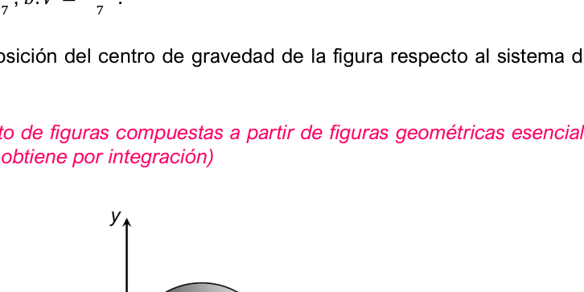
| Variable | Valor |
|---|---|
| Figura | Semidisco de radio \(r\) con vaciado de semidisco de radio \(r/2\) en mitad derecha |
| Radio exterior | \(r\) |
| Radio del vaciado | \(r/2\) |
| Incógnita | posición del CG |
Se aplica el principio de superposición: se considera la figura total como la suma de una figura positiva (sólido completo) y una negativa (el hueco que se resta).
Centroide de un semidisco de radio \(R\) apoyado sobre su diámetro:
\[ y = \frac{4R}{3\pi} \]El área del hueco se introduce con signo negativo tanto en el área total como en los momentos estáticos.
Área 1 — Semidisco grande (\(R_1 = r\), positivo):
\[ A_1 = \frac{\pi r^2}{2} \qquad x_1 = r \qquad y_1 = \frac{4r}{3\pi} \]Área 2 — Semidisco pequeño (\(R_2 = r/2\), hueco → negativo):
\[ A_2 = -\frac{\pi (r/2)^2}{2} = -\frac{\pi r^2}{8} \qquad x_2 = \frac{3r}{2} \qquad y_2 = \frac{4(r/2)}{3\pi} = \frac{2r}{3\pi} \]Área total:
\[ A_{tot} = \frac{\pi r^2}{2} - \frac{\pi r^2}{8} = \frac{4\pi r^2 - \pi r^2}{8} = \frac{3\pi r^2}{8} \]Volumen de acero removido en avellanado
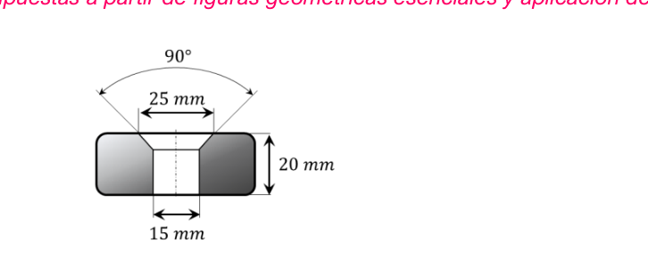
| Variable | Valor |
|---|---|
| Material | Acero, \(\rho = 7{,}85\ \text{kg/dm}^3\) |
| Espesor de la pieza | \(20\ \text{mm}\) |
| Diámetro del taladro | \(15\ \text{mm}\) |
| Avellana | ángulo \(90°\), diámetro exterior \(25\ \text{mm}\) |
| Incógnita | volumen de acero removido |
El hueco es un sólido de revolución. Cortando por el eje de simetría, la sección generatriz está compuesta por dos áreas:
- Rectángulo — el taladro cilíndrico pasante
- Triángulo rectángulo — el cono del avellanado
Se aplica el Teorema de Pappus-Guldin:
\[ V = 2\pi \cdot \sum(A_i \cdot x_i) = 2\pi \cdot (Q_{y1} + Q_{y2}) \]El taladro tiene \(\varnothing\,15\ \text{mm}\) → radio \(r = 7{,}5\ \text{mm}\). El avellanado llega a \(\varnothing\,25\ \text{mm}\) → radio exterior \(R = 12{,}5\ \text{mm}\).
Base del triángulo (diferencia de radios): \(b = 12{,}5 - 7{,}5 = 5\ \text{mm}\).
Ángulo 90° simétrico (45° a cada lado) → triángulo isósceles → altura \(= b = 5\ \text{mm}\).
Centroide en \(x\) a mitad de la base:
\[ x_1 = \frac{7{,}5}{2} = 3{,}75\ \text{mm} \qquad Q_{y1} = 150 \times 3{,}75 = 562{,}5\ \text{mm}^3 \]El centroide de un triángulo rectángulo está a \(\frac{1}{3}\) del cateto desde el vértice del ángulo recto. El cateto empieza en \(x = 7{,}5\), no en el origen:
\[ x_2 = 7{,}5 + \frac{5}{3} = \frac{22{,}5 + 5}{3} = \frac{27{,}5}{3}\ \text{mm} \approx 9{,}17\ \text{mm} \] \[ Q_{y2} = 12{,}5 \times \frac{27{,}5}{3} = \frac{343{,}75}{3}\ \text{mm}^3 \]Longitud del tramo \(CE\) para que \(G\) esté en \(C\)
Calcular \(l\) para que el centro de gravedad del conjunto se localice en \(C\):
a) \(\vartheta = 15°\) b) \(\vartheta = 60°\)
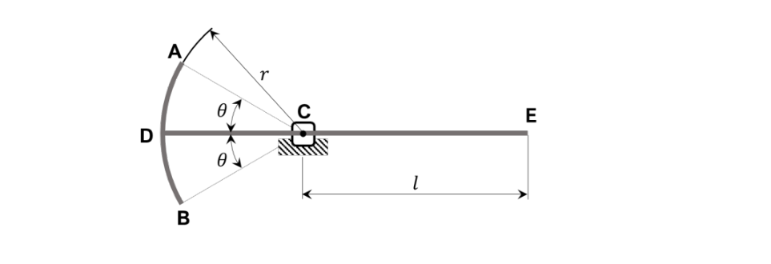
| Variable | Valor |
|---|---|
| Figura | Alambre homogéneo \(ABCDE\) |
| Arco \(AB\) | radio \(r\), ángulo total \(2\vartheta\) |
| Tramo \(DC\) | \(r\) |
| Tramo \(CE\) | \(l\) (incógnita) |
| Incógnita | longitud \(l\) y posición del CG |
El alambre es un elemento unidimensional continuo — se trabaja con longitudes \(L_i\) en lugar de áreas.
El centroide de un arco de circunferencia de radio \(r\) y semiángulo \(\theta\) (medido desde el eje de simetría) está a una distancia del centro de curvatura de:
\[ x_{arco} = \frac{r \sin\theta}{\theta} \]Para que \(G\) esté en el origen \(C(0,0)\), la suma de los momentos estáticos de línea respecto al eje \(y\) debe ser cero:
\[ Q_{y1} + Q_{y2} = 0 \]Se fija el origen en \(C\), que es el punto donde debe estar \(G\). Así la condición de equilibrio es simplemente \(\sum Q_y = 0\).
- El arco \(AB\) queda a la izquierda de \(C\) → su centroide tiene coordenada \(x\) negativa
- La barra \(DE\) va desde \(x = -r\) hasta \(x = l\)
El centroide del arco está a \(\frac{r\sin\theta}{\theta}\) del centro de curvatura, pero como el arco está a la izquierda de \(C\):
\[ x_1 = -\frac{r\sin\theta}{\theta} \] \[ Q_{y1} = L_1 \cdot x_1 = 2r\theta \cdot \left(-\frac{r\sin\theta}{\theta}\right) = -2r^2\sin\theta \]La barra va de \(x = -r\) (punto \(D\)) a \(x = l\) (punto \(E\)):
\[ L_2 = r + l \]Su centroide está en el punto medio geométrico:
\[ x_2 = \frac{l + (-r)}{2} = \frac{l - r}{2} \] \[ Q_{y2} = L_2 \cdot x_2 = (r + l) \cdot \frac{l - r}{2} = \frac{l^2 - r^2}{2} \]Multiplicando por 2:
\[ -4r^2\sin\theta + l^2 - r^2 = 0 \implies l^2 = r^2(1 + 4\sin\theta) \] \[ \boxed{l = r\sqrt{1 + 4\sin\theta}} \]a) \(\vartheta = 15°\):
\[ l = r\sqrt{1 + 4\sin 15°} = r\sqrt{1 + 4 \times 0{,}2588} = r\sqrt{2{,}0352} \approx 1{,}427\,r \]b) \(\vartheta = 60°\):
\[ l = r\sqrt{1 + 4\sin 60°} = r\sqrt{1 + 4 \times 0{,}866} = r\sqrt{4{,}464} \approx 2{,}11\,r \]Volumen de revolución alrededor del eje \(e\)
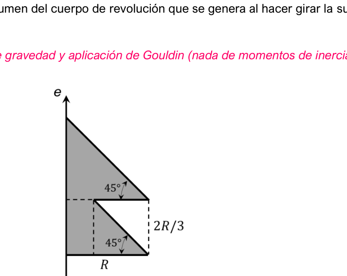
| Variable | Valor |
|---|---|
| Figura | Triángulo rectángulo con ángulos de \(45°\) |
| Base | \(R\) |
| Altura | \(2R/3\) |
| Chaflán triangular | en el eje \(e\) |
| Incógnita | volumen del sólido de revolución respecto al eje \(e\) |
Se aplica el Teorema de Pappus-Guldin en su forma directa con el momento estático:
\[ V = 2\pi \cdot Q_e \qquad \text{donde} \quad Q_e = \sum A_i \cdot x_i \]La figura se descompone por superposición: rectángulo sólido (positivo) menos triángulo de chaflán (negativo). El eje \(e\) actúa como eje \(y\), con \(x = 0\) en el eje de rotación.
Rectángulo de base \(R\) y altura \(2R/3\), apoyado sobre el eje \(e\):
\[ A_1 = R \cdot \frac{2R}{3} = \frac{2R^2}{3} \]Centroide a la mitad de la base:
\[ x_1 = \frac{R}{2} \] \[ Q_{e1} = A_1 \cdot x_1 = \frac{2R^2}{3} \cdot \frac{R}{2} = \frac{R^3}{3} = \frac{54R^3}{162} \]El chaflán de 45° forma un triángulo isósceles (base = altura). Por proporcionalidad geométrica con las dimensiones totales de la figura (\(R\) de base, \(2R/3\) de altura), los catetos del triángulo son \(R/3\) cada uno:
\[ A_2 = -\frac{1}{2} \cdot \frac{R}{3} \cdot \frac{R}{3} = -\frac{R^2}{18} \]Centroide a \(\frac{1}{3}\) de la base desde el eje \(e\):
\[ x_2 = \frac{1}{3} \cdot \frac{R}{3} = \frac{R}{9} \] \[ Q_{e2} = A_2 \cdot x_2 = \left(-\frac{R^2}{18}\right) \cdot \frac{R}{9} = -\frac{R^3}{162} \]Momento de inercia de una barra homogénea
- Eje \(z\) que pasa por su centro de gravedad.
- Eje \(z\) que pasa por un extremo.
| Variable | Valor |
|---|---|
| Figura | Barra homogénea |
| Masa | \(M\) |
| Longitud | \(L\) |
| Caso a) | momento de inercia respecto al eje central |
| Caso b) | momento de inercia respecto al eje en un extremo |
Para una barra homogénea se define la densidad lineal de masa \(\lambda\) (constante):
\[ \lambda = \frac{M}{L} \qquad \Rightarrow \qquad dm = \lambda\, dx = \frac{M}{L}\,dx \]El momento de inercia respecto a un eje es:
\[ I = \int x^2\, dm \]El Teorema de Steiner (ejes paralelos) permite trasladar el momento de inercia desde el centroide a cualquier eje paralelo:
\[ I_O = I_G + M \cdot d^2 \]Origen en el CG: la barra se extiende de \(x = -L/2\) a \(x = +L/2\).
\[ I_G = \int_{-L/2}^{L/2} x^2 \cdot \frac{M}{L}\,dx = \frac{M}{L}\left[\frac{x^3}{3}\right]_{-L/2}^{L/2} = \frac{M}{L}\left(\frac{L^3/8}{3} - \frac{-L^3/8}{3}\right) \] \[ I_G = \frac{M}{L} \cdot \frac{2L^3}{24} = \frac{M}{L} \cdot \frac{L^3}{12} \] \[ \boxed{I_G = \frac{ML^2}{12}} \]Origen en el extremo: la barra se extiende de \(x = 0\) a \(x = L\).
\[ I_O = \int_0^L x^2 \cdot \frac{M}{L}\,dx = \frac{M}{L}\left[\frac{x^3}{3}\right]_0^L = \frac{M}{L} \cdot \frac{L^3}{3} \] \[ \boxed{I_O = \frac{ML^2}{3}} \]La distancia entre el CG y el extremo es \(d = L/2\). Aplicando Steiner sobre el resultado del Caso A:
\[ I_O = I_G + M \cdot d^2 = \frac{ML^2}{12} + M \cdot \left(\frac{L}{2}\right)^2 = \frac{ML^2}{12} + \frac{ML^2}{4} = \frac{ML^2}{12} + \frac{3ML^2}{12} = \frac{4ML^2}{12} \] \[ \boxed{I_O = \frac{ML^2}{3}} \checkmark \]Momento de inercia de un disco homogéneo
- Respecto al eje \(z\) perpendicular al disco por su centro.
- Respecto a un eje cualquiera en el plano \(xy\) que pase por su centro.
| Variable | Valor |
|---|---|
| Figura | Disco homogéneo |
| Masa | \(M\) |
| Radio | \(R\) |
| Caso a) | \(I_z\) eje perpendicular por el centro |
| Caso b) | \(I\) eje cualquiera en el plano \(xy\) por el centro |
Para un disco homogéneo se define la densidad superficial de masa \(\sigma\) (constante):
\[ \sigma = \frac{M}{\pi R^2} \]Se usan coordenadas polares: el elemento diferencial de área es un anillo de radio \(r\) y espesor \(dr\), con área \(dA = 2\pi r\, dr\).
El Teorema de ejes perpendiculares (lámina plana) establece:
\[ I_z = I_x + I_y \]Combinado con la simetría del disco (\(I_x = I_y\)), permite obtener el momento diametral sin integración adicional.
Masa del anillo diferencial de radio \(r\):
\[ dm = \sigma \cdot dA = \frac{M}{\pi R^2} \cdot 2\pi r\, dr = \frac{2M}{R^2}\, r\, dr \]Todos los puntos del anillo están a distancia \(r\) del eje \(z\):
\[ I_z = \int_0^R r^2\, dm = \int_0^R r^2 \cdot \frac{2M}{R^2}\, r\, dr = \frac{2M}{R^2} \int_0^R r^3\, dr = \frac{2M}{R^2} \left[\frac{r^4}{4}\right]_0^R = \frac{2M}{R^2} \cdot \frac{R^4}{4} \] \[ \boxed{I_z = \frac{MR^2}{2}} \]Simetría: el disco es perfectamente circular y homogéneo, por lo que su resistencia a girar alrededor de cualquier eje diametral es idéntica:
\[ I_x = I_y \]Teorema de ejes perpendiculares:
\[ I_z = I_x + I_y = 2\,I_x \implies I_x = \frac{I_z}{2} = \frac{\dfrac{MR^2}{2}}{2} \] \[ \boxed{I_x = I_y = \frac{MR^2}{4}} \]Inercias y productos de inercia del rectángulo ★ Nivel Examen
- Sistema \(xy\): origen en el vértice inferior izquierdo \(O\).
- Sistema \(x'y'\): origen en el centroide \(G\) (paralelo a \(xy\)).
Nota: el rectángulo no tiene masa definida, solo dimensiones geométricas → se trabaja con momentos de inercia de área \([cm^4]\).
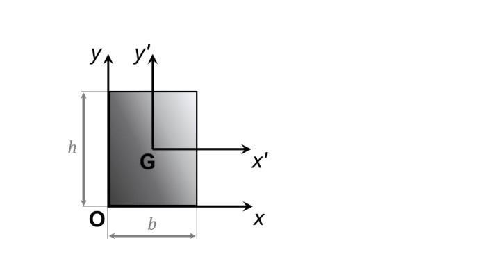
| Variable | Valor |
|---|---|
| Figura | Rectángulo plano |
| Base | \(b\) |
| Altura | \(h\) |
| Sistema \(xy\) | origen en vértice inferior izquierdo \(O\) |
| Sistema \(x'y'\) | origen en centroide \(G\) |
| Incógnitas | momentos e productos de inercia en ambos sistemas |
Los momentos de inercia de área miden la resistencia de una sección a doblarse alrededor de un eje:
\[ I_x = \int y^2\, dA \qquad I_y = \int x^2\, dA \qquad C_{xy} = \int xy\, dA \]El Teorema de Steiner para traslación de ejes (de \(O\) al centroide \(G\) a distancia \(d\)):
\[ I_{x'} = I_x - A \cdot y_G^2 \qquad I_{y'} = I_y - A \cdot x_G^2 \qquad C_{x'y'} = C_{xy} - A \cdot x_G \cdot y_G \]El producto de inercia es nulo cuando los ejes son ejes de simetría de la figura.
Tiras horizontales de anchura \(b\) y altura \(dy\) a distancia \(y\) del eje \(x\):
\[ dA = b\, dy \qquad \Rightarrow \qquad I_x = \int_0^h y^2 \cdot b\, dy = b\left[\frac{y^3}{3}\right]_0^h \] \[ \boxed{I_x = \frac{bh^3}{3}} \]Tiras verticales de altura \(h\) y anchura \(dx\) a distancia \(x\) del eje \(y\):
\[ dA = h\, dx \qquad \Rightarrow \qquad I_y = \int_0^b x^2 \cdot h\, dx = h\left[\frac{x^3}{3}\right]_0^b \] \[ \boxed{I_y = \frac{hb^3}{3}} \]El centroide del rectángulo está en \(x_G = b/2\), \(y_G = h/2\). Área total \(A = bh\).
\[ I_{x'} = I_x - A \cdot y_G^2 = \frac{bh^3}{3} - bh \cdot \frac{h^2}{4} = \frac{bh^3}{3} - \frac{bh^3}{4} = \frac{4bh^3 - 3bh^3}{12} \] \[ \boxed{I_{x'} = \frac{bh^3}{12}} \] \[ I_{y'} = I_y - A \cdot x_G^2 = \frac{hb^3}{3} - bh \cdot \frac{b^2}{4} = \frac{hb^3}{3} - \frac{hb^3}{4} \] \[ \boxed{I_{y'} = \frac{hb^3}{12}} \] \[ C_{x'y'} = C_{xy} - A \cdot x_G \cdot y_G = \frac{b^2h^2}{4} - bh \cdot \frac{b}{2} \cdot \frac{h}{2} = \frac{b^2h^2}{4} - \frac{b^2h^2}{4} \] \[ \boxed{C_{x'y'} = 0} \]El producto de inercia es cero porque \(x'\) e \(y'\) son ejes de simetría del rectángulo.
Momentos de inercia de superficie parabólica ★ Nivel Examen
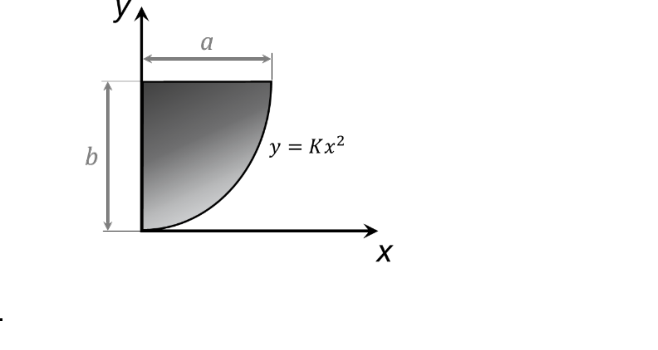
| Variable | Valor |
|---|---|
| Región | limitada por \(x=0\), \(y=b\) y curva \(y=Kx^2\) |
| Dimensiones | ancho \(a\), alto \(b\) |
| Incógnitas | \(I_x\) e \(I_y\) por integración |
La constante \(K\) se obtiene del punto extremo \((a, b)\):
\[ b = K \cdot a^2 \implies K = \frac{b}{a^2} \qquad \Rightarrow \qquad y = \frac{b}{a^2}\,x^2 \]Estrategia de integración:
- Tiras verticales para \(I_y\): la altura de cada tira es \(b - y_{curva}\), directo.
- Tiras horizontales para \(I_x\): el ancho es \(x(y)\) despejado de la curva. Evita aplicar Steiner a cada tira vertical.
La tira vertical en \(x\) va desde la curva hasta \(y = b\), con altura \(h = b - \frac{b}{a^2}x^2\):
\[ dA = \left(b - \frac{b}{a^2}x^2\right)dx \] \[ I_y = \int_0^a x^2 \cdot \left(b - \frac{b}{a^2}x^2\right)dx = \int_0^a \left(bx^2 - \frac{b}{a^2}x^4\right)dx = \left[\frac{bx^3}{3} - \frac{bx^5}{5a^2}\right]_0^a \] \[ I_y = \frac{ba^3}{3} - \frac{ba^3}{5} = ba^3\left(\frac{5-3}{15}\right) \] \[ \boxed{I_y = \frac{2ba^3}{15}} \]Se despeja \(x\) en función de \(y\): la tira horizontal en \(y\) va de \(x = 0\) hasta la curva:
\[ y = \frac{b}{a^2}x^2 \implies x = a\sqrt{\frac{y}{b}} = a \cdot y^{1/2} \cdot b^{-1/2} \] \[ dA = x\, dy = a\, b^{-1/2}\, y^{1/2}\, dy \] \[ I_x = \int_0^b y^2 \cdot a\, b^{-1/2}\, y^{1/2}\, dy = \frac{a}{\sqrt{b}} \int_0^b y^{5/2}\, dy = \frac{a}{\sqrt{b}} \left[\frac{y^{7/2}}{7/2}\right]_0^b = \frac{a}{\sqrt{b}} \cdot \frac{2}{7} \cdot b^{7/2} \] \[ I_x = \frac{2a}{7} \cdot \frac{b^{7/2}}{b^{1/2}} = \frac{2a}{7} \cdot b^3 \] \[ \boxed{I_x = \frac{2ab^3}{7}} \]Superficie plana hueca: CG, inercias y volumen ★ Nivel Examen
- Posición del centro de gravedad respecto al sistema \(x'y'\) (origen en vértice \(O\)).
- Momentos de inercia respecto a los ejes \(x'\) e \(y'\).
- Momentos de inercia respecto a los ejes \(x\) e \(y\) paralelos que pasan por \(G\).
- Volumen generado al girar la superficie respecto al eje \(x'\).
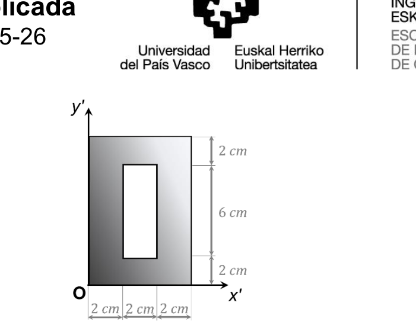
| Variable | Valor |
|---|---|
| Figura | Marco rectangular (perfil hueco) |
| Incógnitas | CG y momentos \(I_{x\'}\), \(I_{y\'}\), \(I_x\), \(I_y\) respecto a ejes centrales y propios |
Se aplica superposición: rectángulo exterior (positivo) − rectángulo interior hueco (negativo). El orden óptimo de cálculo es:
- Calcular las inercias centroidales de cada figura (\(bh^3/12\))
- Combinar por superposición → inercias centroidales del conjunto
- Aplicar Steiner para trasladar al vértice \(O\)
Steiner inverso (de centroide al vértice): \(I_{x'} = I_x + A \cdot y_G^2\)
Figura 1 (rectángulo exterior): \(b_1 = 6\ \text{cm}\), \(h_1 = 10\ \text{cm}\)
\[A_1 = 6 \times 10 = 60\ \text{cm}^2 \qquad x_1 = 3\ \text{cm} \qquad y_1 = 5\ \text{cm}\]Figura 2 (hueco interior): \(b_2 = 2\ \text{cm}\), \(h_2 = 6\ \text{cm}\) — negativo
\[A_2 = -(2 \times 6) = -12\ \text{cm}^2 \qquad x_2 = 3\ \text{cm} \qquad y_2 = 5\ \text{cm}\] \[A_{tot} = 60 - 12 = 48\ \text{cm}^2\]Ambas figuras comparten el mismo centroide \((3, 5)\) por simetría, lo que simplifica el cálculo:
\[ x_G = \frac{A_1 x_1 + A_2 x_2}{A_{tot}} = \frac{60 \cdot 3 + (-12) \cdot 3}{48} = \frac{180 - 36}{48} = \frac{144}{48} = 3\ \text{cm} \] \[ y_G = \frac{A_1 y_1 + A_2 y_2}{A_{tot}} = \frac{60 \cdot 5 + (-12) \cdot 5}{48} = \frac{300 - 60}{48} = \frac{240}{48} = 5\ \text{cm} \]Como los ejes centroidales \(x\) e \(y\) pasan exactamente por los centros de ambas figuras, no hace falta Steiner — superposición directa:
\[ I_x = \frac{b_1 h_1^3}{12} - \frac{b_2 h_2^3}{12} = \frac{6 \cdot 10^3}{12} - \frac{2 \cdot 6^3}{12} = \frac{6000}{12} - \frac{432}{12} = 500 - 36 = 464\ \text{cm}^4 \] \[ I_y = \frac{h_1 b_1^3}{12} - \frac{h_2 b_2^3}{12} = \frac{10 \cdot 6^3}{12} - \frac{6 \cdot 2^3}{12} = \frac{2160}{12} - \frac{48}{12} = 180 - 4 = 176\ \text{cm}^4 \]La distancia del centroide \(G\) al eje \(x'\) es \(d = y_G = 5\ \text{cm}\):
\[ V = 2\pi \cdot d \cdot A_{tot} = 2\pi \cdot 5 \cdot 48 = 480\pi \approx 1508\ \text{cm}^3 \]Sistema articulado de barras en T ★ Nivel Examen
- Posición del centro de gravedad del sistema \(G\).
- Momento de inercia del conjunto respecto a \(G\).
- Momento de inercia del conjunto respecto a \(O\).
| Variable | Valor |
|---|---|
| Figura | Dos barras homogéneas soldadas en T, articuladas en \(O\) |
| Masa de cada barra | \(8\ \text{kg}\) |
| Longitud barra horizontal \(OA\) | \(0{,}25\ \text{m}\) |
| Longitud barra vertical | \(0{,}5\ \text{m}\) (0,25 m a cada lado de \(A\)) |
| Incógnitas | CG del sistema; ángulo de equilibrio; \(I_O\) |
Para barras homogéneas, los momentos de inercia de referencia son:
\[ I_G = \frac{1}{12}mL^2 \quad \text{(eje por el centro)} \qquad I_O = \frac{1}{3}mL^2 \quad \text{(eje por un extremo)} \]Estrategia óptima: calcular \(I_O\) primero (es el punto de articulación, geométricamente directo para ambas barras), y luego obtener \(I_G\) por Steiner inverso:
\[ I_G = I_O - M \cdot d_{OG}^2 \]Origen en \(O(0,0)\). Masas y centroides de cada barra:
\[ m_1 = 8\ \text{kg} \quad x_1 = \frac{0{,}25}{2} = 0{,}125\ \text{m} \quad y_1 = 0 \] \[ m_2 = 8\ \text{kg} \quad x_2 = 0{,}25\ \text{m} \quad y_2 = 0 \quad \text{(simétrica respecto al eje horizontal)} \] \[ x_G = \frac{m_1 x_1 + m_2 x_2}{M} = \frac{8 \cdot 0{,}125 + 8 \cdot 0{,}25}{16} = \frac{1 + 2}{16} = \frac{3}{16} = 0{,}1875\ \text{m} \] \[ y_G = 0 \quad \text{(simetría)} \]Barra 1 (horizontal): extremo en \(O\), fórmula directa:
\[ I_{O1} = \frac{1}{3}m_1 L_1^2 = \frac{1}{3}(8)(0{,}25)^2 = \frac{8}{3} \cdot \frac{1}{16} = \frac{1}{6}\ \text{kg·m}^2 \]Barra 2 (vertical): centroide en \(x_2 = 0{,}25\ \text{m}\) desde \(O\) — Steiner:
\[ I_{G2} = \frac{1}{12}m_2 L_2^2 = \frac{1}{12}(8)(0{,}5)^2 = \frac{8}{12} \cdot \frac{1}{4} = \frac{1}{6}\ \text{kg·m}^2 \] \[ I_{O2} = I_{G2} + m_2 d_2^2 = \frac{1}{6} + 8(0{,}25)^2 = \frac{1}{6} + \frac{1}{2} = \frac{1}{6} + \frac{3}{6} = \frac{4}{6}\ \text{kg·m}^2 \] \[ \boxed{I_O = I_{O1} + I_{O2} = \frac{1}{6} + \frac{4}{6} = \frac{5}{6}\ \text{kg·m}^2} \]Rectángulo con agujero circular: CG, inercias y producto ★ Nivel Examen
- Posición del CG respecto a los ejes \(xy\) (origen en \(O\)).
- Momentos de inercia \(I_x\) e \(I_y\) respecto a los ejes en \(O\).
- Momentos de inercia centroidales \(I_{x'}\) e \(I_{y'}\) paralelos que pasan por \(G\).
- Producto de inercia \(C_{x'y'}\) respecto a los ejes centroidales.
| Variable | Valor |
|---|---|
| Figura | Rectángulo con agujero circular |
| Dimensiones del rectángulo | \(35 \times 50\ \text{cm}\) |
| Radio del agujero | \(R = 10\ \text{cm}\) |
| Centro del agujero | \((15,\,30)\ \text{cm}\) desde \(O\) |
| Incógnitas | CG; \(I_x\), \(I_y\) respecto a ejes por \(O\) |
Superposición: rectángulo exterior (positivo) − disco (negativo). Para el disco de radio \(R\):
\[ I_{x,\text{disco}} = \frac{\pi R^4}{4} \quad \text{(centroidal)} \qquad C_{xy,\text{disco}} = 0 \quad \text{(simetría)} \]Para el producto de inercia del rectángulo desde el origen:
\[ C_{xy,\text{rect}} = \frac{b^2 h^2}{4} \]Steiner para trasladar al centroide (inverso): \(I_{x'} = I_x - A_{tot} \cdot y_G^2\)
Steiner para producto de inercia: \(C_{x'y'} = C_{xy} - A_{tot} \cdot x_G \cdot y_G\)
Producto de inercia respecto a \(O\):
\[ C_{xy} = \frac{35^2 \times 50^2}{4} - (0 + 100\pi \times 15 \times 30) = 765\,625 - 45000\pi \approx 624\,253\ \text{cm}^4 \]Traslación al centroide:
\[ C_{x'y'} = C_{xy} - A_{tot} \cdot x_G \cdot y_G = 624\,253 - 1435{,}84 \times 18{,}05 \times 23{,}91 \approx 4\,786\ \text{cm}^4 \]